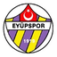

Kocaelispor vs Fenerbahçe: result and our prediction
Kocaelispor host Fenerbahçe in the Süper Lig (round 12) on Saturday 21 November 2026. Kocaelispor are #417 in our world ranking and have won 3 and drawn 2 of their last 5; Fenerbahçe are #54 and have won 2, drawn 1 and lost 2 of their last 5. On paper that's a big gap - 363 places - in Fenerbahçe's favour.
Our prediction
Our model makes Fenerbahçe the favourites at 66%, with a draw at 20% and Kocaelispor at 14%.
Rating: 1119
Chance to win: 14%
Last 5: DWDWW
Rating: 1432
Chance to win: 66%
Last 5: DWWLL
Who will win Kocaelispor vs Fenerbahçe?
Kocaelispor are #417 and Fenerbahçe #54 in our world ranking of every senior club. Based on the two clubs' ratings and home advantage, the most likely result is Fenerbahçe (66%). More from the Süper Lig.
Head to head
| Date | Match | Score |
|---|---|---|
| 2026-11-21 | Kocaelispor v Fenerbahçe | 2-2 |
| 2026-02-02 | Kocaelispor v Fenerbahçe | 0-2 |
| 2025-08-23 | Fenerbahçe v Kocaelispor | 3-1 |
Süper Lig table
| # | Club | P | Pts | World |
|---|---|---|---|---|
| 3 | Amed | 12 | 23 | #380 |
| 4 | Beşiktaş | 11 | 22 | #93 |
| 5 | Fenerbahçe | 12 | 20 | #54 |
| 6 | Kasımpaşa | 11 | 20 | #308 |
| 7 | Kocaelispor | 12 | 20 | #417 |
| 8 | Başakşehir | 11 | 17 | #195 |
| 9 | Rizespor | 12 | 17 | #342 |
How this is worked out
Every senior result from every country feeds one Elo rating system, so every club in the world sits on the same scale. Before each match the two ratings, adjusted for home advantage, give the chances of a home win, a draw and an away win. See the full world ranking and every match today.
| # | Club | P | W | D | L | GD | Pts |
|---|---|---|---|---|---|---|---|
| 1 |  Galatasaray Galatasaray | 12 | 10 | 1 | 1 | 13 | 31 |
| 2 |  Trabzonspor Trabzonspor | 11 | 8 | 1 | 2 | 18 | 25 |
| 3 | Amed | 12 | 7 | 2 | 3 | 11 | 23 |
| 4 |  Beşiktaş Beşiktaş | 11 | 7 | 1 | 3 | 11 | 22 |
| 5 |  Fenerbahçe Fenerbahçe | 12 | 6 | 2 | 4 | 19 | 20 |
| 6 |  Kasımpaşa Kasımpaşa | 11 | 5 | 5 | 1 | 6 | 20 |
| 7 |  Kocaelispor Kocaelispor | 12 | 6 | 2 | 4 | 4 | 20 |
| 8 |  Başakşehir Başakşehir | 11 | 5 | 2 | 4 | 2 | 17 |
| 9 |  Rizespor Rizespor | 12 | 5 | 2 | 5 | -1 | 17 |
| 10 |  Çorum FK Çorum FK | 11 | 5 | 1 | 5 | 0 | 16 |
| 11 |  Göztepe Göztepe | 11 | 4 | 3 | 4 | 3 | 15 |
| 12 |  Erzurumspor FK Erzurumspor FK | 11 | 4 | 2 | 5 | -7 | 14 |
| 13 |  Gençlerbirliği S.K. Gençlerbirliği S.K. | 12 | 4 | 2 | 6 | -8 | 14 |
| 14 |  Alanyaspor Alanyaspor | 11 | 3 | 3 | 5 | -9 | 12 |
| 15 |  Konyaspor Konyaspor | 11 | 2 | 2 | 7 | -8 | 8 |
| 16 |  Gaziantep FK Gaziantep FK | 12 | 2 | 2 | 8 | -11 | 8 |
| 17 |  Samsunspor Samsunspor | 12 | 2 | 1 | 9 | -16 | 7 |
| 18 |  Eyüpspor | 11 | 1 | 0 | 10 | -27 | 3 |